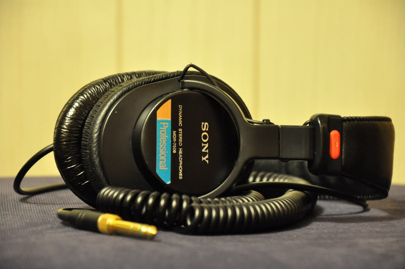
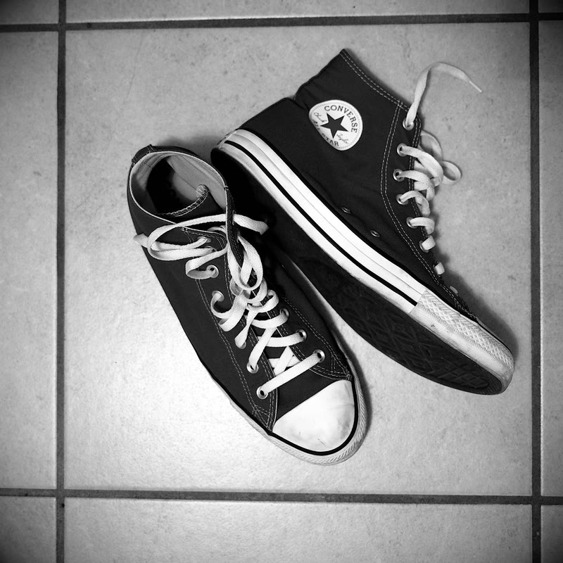
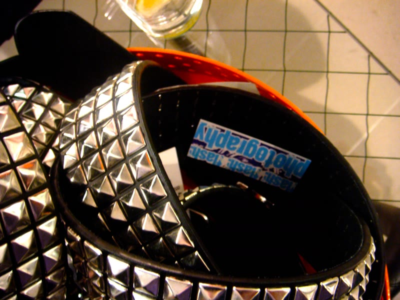
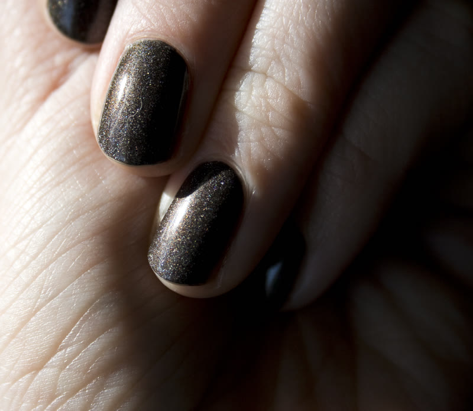
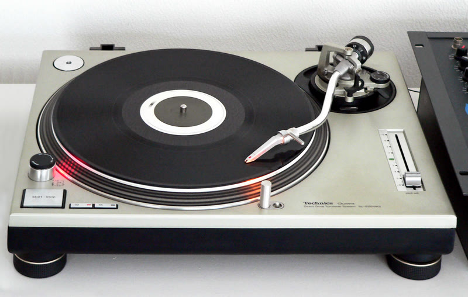
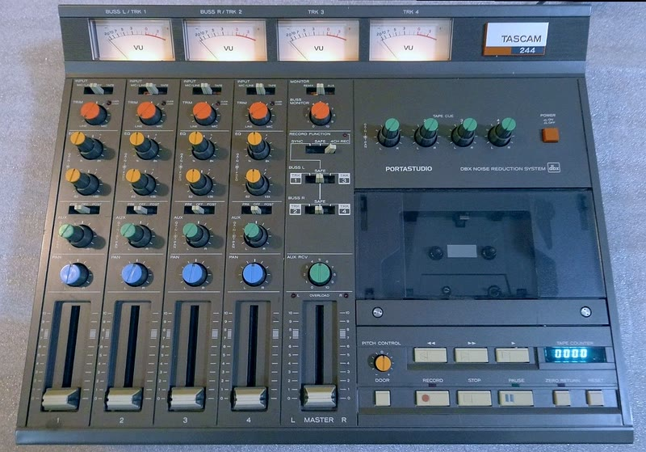

| Nombre Completo: | Jaden Vance (a veces firma como j_vance_flac en foros de audio). |
| Edad & Grado: | 17 años |
| Ocupación / Rol: | Jefe del Club Audiovisual (AV Club) y Operador Principal de Sonido e Iluminación del Auditorio de East High. |
| Personalidad: | Cínico, analítico, introvertido y dotado de un marcado instinto de superioridad estética. Convencido de que el 99% de la música comercial es basura corporativa prediseñada. Solo respeta obras con texturas dinámicas, métricas complejas (5/4, 7/8) y reseñas superiores a 3.8 en RateYourMusic o menciones de Steve Albini. |
| Equipo Inseparable: | Audífonos de estudio Sony MDR-7506 (con cable espiralado al cuello), reproductor iPod Classic de 80GB con firmware alternativo Rockbox (cero compresión MP3), y termo metálico con café negro triple carga. |
[ CONFIDENCIAL // EXPEDIENTE AV ]
EXPEDIENTE DEL PERSONAJE: JADEN VANCE
El operador técnico AV, snob musical de culto y paria sónico de Albuquerque


DATOS BIOGRÁFICOS
HISTORIA & LORE
En un colegio como East High donde la vida estudiantil está ferozmente polarizada entre atletas que coreografían tiros al aro y aficionados al teatro musical que bailan sobre las mesas de la cafetería,Jaden Vance se rehusa a pertenecer a un sitio. Su santuario es la cabina de sonido en lo alto del auditorio escolar, una fortaleza de vidrio lleno de consolas analógicas, cables XLR y polvo acumulado.
Nombrado técnico oficial simplemente porque ningún otro estudiante comprendía cómo encender los transformadores o ecualizar los micrófonos de solapa sin generar retroalimentación ensordecedora.
«Todo el mundo en este colegio canta como si estuviera dentro de un comercial de refresco. Nadie entiende la
tensión del silencio ni el valor de un crescendo en compás de 7/8. Por eso me encierro con llave en la
cabina.» — Jaden Vance
Durante las audiciones del musical de invierno, Jaden observó tras la consola la irrupción de Troy Bolton y Gabriella Montez. Aunque reconoció a regañadientes que Gabriella posee afinación limpia, su veredicto en los foros de RateYourMusic fue demoledor: «Fórmula predecible de Disney Channel para adormecer el pensamiento crítico de los adolescentes».
DINÁMICA CON LOS PERSONAJES
Sharpay & Ryan Evans
Sharpay exige que los reflectores sigan cada uno de sus pasos y que sus agudos se escuchen en todo el
campus. Jaden aplica filtros pasa-bajos a escondidas para evitar que sus alaridos en "Bop to the Top"
dañen los monitores de retorno. Sharpay ha intentado despedirlo tres veces amenazando con donaciones de
su padre.
Kelsi Nielsen (La Compositora)
Es la única persona en East High a quien Jaden respeta discretamente. Reconoce su talento armónico al
piano y le presta casetes de Joy Division y post-rock para que "deje de componer himnos para gente que
festeja canastas". Jaden conserva una toma secreta en FLAC de un solo de piano melancholic de Kelsi.
Troy Bolton & Chad Danforth
Chad no comprende por qué Jaden prefiere cargar una caja de vinilos pesados en vez de escuchar la radio,
y Jaden no concibe cómo a alguien le puede importar meter un balón naranja en un aro.
Sra. Darbus
Darbus le impone horas de detención cada vez que Jaden pone discos de Slint o grabaciones de ruidos de
trenes por los altavoces durante los ensayos generales. Sin embargo, no puede expulsarlo de la cabina
porque nadie más sabe operar la consola de audio.
GUÍA VISUAL & ESTILO
El estilo visual de Jaden bebe directamente del Midwest Emo y Post-Hardcore de 1999–2005, alejándose por completo del glitter y los uniformes deportivos de los Wildcats:

SONY MDR-7506 // MONITORES
Audífonos profesionales con cable espiralado de 3 metros al cuello. Su barrera
para no escuchar los alaridos del gimnasio.

CONVERSE ALL-STAR // HI-TOP
Lona negra desgastada, punteras de goma sucias por cables del auditorio y
garabateadas con plumón Sharpie.

STUDDED BELT // PIRÁMIDES
Cinturón de doble fila de tachas metálicas plateadas sobre jeans negros pitillo
desgastados en las rodillas.

NAIL POLISH // ESMALTE NEGRO
Uñas pintadas de negro descascarilladas, pulseras de goma y muñequera de
algodón para operar faders de audio.
HABITACIÓN & BÚNKER ACÚSTICO
Su dormitorio en Albuquerque es un refugio sónico analógico, diseñado para bloquear cualquier vestigio del mundo exterior:

TECHNICS SL-1200MK2 // TORNAMESA
Bandeja analógica de tracción directa conectada a un amplificador estéreo
Marantz de 1978 con vúmetros ámbar.
VINILOS // 180 GRAMOS
Más de 350 prensados ordenados por sello (Touch & Go, Dischord, Factory).
Prohibido tocarlos con manos sucias.

TASCAM PORTASTUDIO // 4 PISTAS
Grabadora analógica a casete con controles analógicos donde graba tomas de
ruido, slowcore y piano a las 3:00 AM.
IBM THINKPAD // WINAMP & P2P
Laptop portátil con Windows XP SP2, corriendo Winamp v2.91 oscuro,
Audioscrobbler y carpetas organizadas en FLAC.